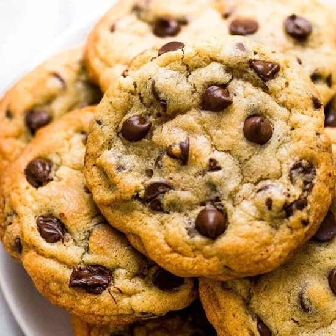

Chocolate Chip Cookies
Chocolate Chip Cookie Recipe

Description
I'm so glad you've come across my page so that you can try out my go-to
recipe for chocoalte chip cookies. These always turn out perfectly gooey
in the middle and crispy on the outside. These make enough for whatever
event you're throwing--either for yourself, family, or friends. I gurantee
you these will be gone within minutes; they're not only delicious but even
easier to make.
Ingredients
- 2 1/2 cups All-purpose flour
- 1 tsp. Baking Soda
- 1 tsp. Salt
- 2 room temp. Eggs
- 1 cup(2 sticks) Butter
- 2 tsp. Vanilla extract
- 2 cups Chooclate chips
- 3/4 cup White granulated sugar
- 3/4 cup Brown sugar
Steps
- Preheat oven to 375 degrees fairenheit.
- Cream together the butter, brown sugar, and white sugar until mixed and
all lumps are gone at medium speed.
- Add in vanilla extract and eggs and mix on low speed. Do not overmix. Mix
until eggs are just incorporated.
- In a separate bowl, whisk together the flour, salt, and baking soda.
- While mixing on low speed, add in increments the dry ingredients into the wet.
- Once mixed, add in the chocolate chips.
- Drop ~2 tablespoons of dough for each cookie on a parchment-lined baking sheet.
- Let cookies bake in oven for 10 minutes. Sprike salt on top for more flavor if you want!
- Once out of the oven, let cookies sit on the sheet for 3 minutes. Then,
transfer to a baking sheet. They may look undone but as they sit they'll harden
on the outside.
- Enjoy!